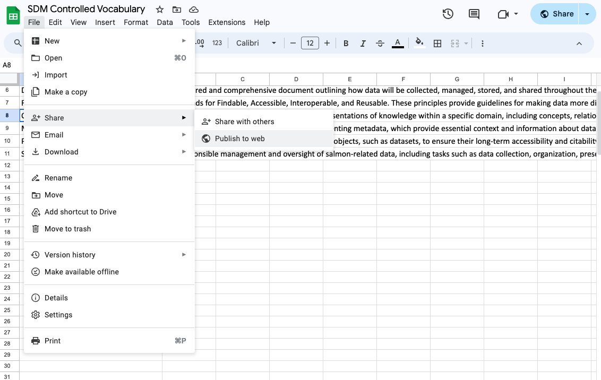
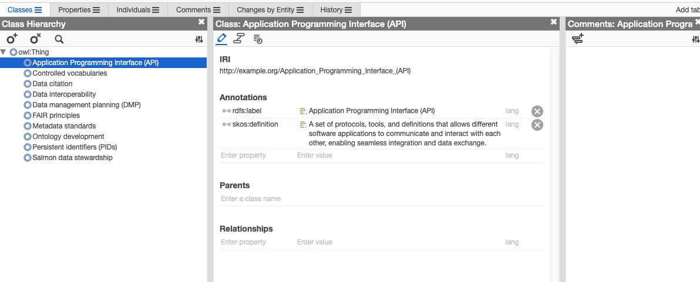

Introduction
Controlled vocabularies and ontologies are cornerstone elements in the domain of information organization. By establishing a standardized lexicon and defining the relationships between concepts, these frameworks empower sectors of society and research domains to achieve greater data consistency, interoperability, and semantic precision.
Historical Insight into Controlled Vocabularies and Ontologies
The journey of controlled vocabularies and ontologies began in the early days of library science, evolving from simple thesauri and classification systems to sophisticated semantic frameworks. The inception of the semantic web in the late 20th century marked a significant leap, propelling the development of ontologies to enable the web of data to be machine-readable. Standards such as RDF (Resource Description Framework), OWL (Web Ontology Language), and SKOS (Simple Knowledge Organization System) emerged, each contributing to the layered architecture of the semantic web, enabling machines to understand and process the semantics of data.
By transitioning from a very basic controlled vocabulary in a spreadsheet to a structured ontology using Python and RDFlib, this tutorial underscores a practical application of these concepts. Through this tutorial, you will learn how to get started building an ontology without any prior experience, equipping you with the knowledge to implement these powerful tools in your domain, thereby enhancing the richness and utility of your data.
We will use the following tools and technologies in this tutorial:
- Python: A versatile programming language widely used for data processing and manipulation.
- pandas: A powerful data manipulation library in Python that provides data structures and functions for working with structured data.
- RDFlib: A Python library for working with RDF (Resource Description Framework) data, which is commonly used for representing ontologies and semantic data.
- googlesheets: A Google Sheets document that contains a simple controlled vocabulary.
- protégé: An ontology editor and knowledge management tool that we will use to visualize and explore the created ontology.
and these standards:
RDF: The Resource Description Framework is a foundational standard for encoding, exchanging, and reusing structured metadata. Its graph-based structure aligns well with the interconnected nature of semantic data, making it a core pillar of the semantic web.
SKOS: Simple Knowledge Organization System provides a simpler, lightweight standard compared to OWL, ideal for representing controlled vocabularies. Its ease of use and focus on basic semantic relationships make it suitable for beginners and for applications where complex ontology features are unnecessary.
OWL: The Web Ontology Language extends RDF, offering more advanced features for describing properties and classes, such as relations between classes, cardinality, equality, and more. Its selection for this tutorial is due to its expressiveness and widespread adoption in ontology development.
turtle: A human-readable serialization format for RDF data that uses a compact syntax to represent triples.
Knowledge Graphs, Ontologies, and Data. Oh my!
A controlled vocabulary is a list of standardized terms used to describe concepts, objects, or entities within a specific domain or field. These terms are carefully selected, defined, and organized to ensure consistency and accuracy in communication. By using a controlled vocabulary, you can improve searchability, interoperability, and data quality in various applications, such as libraries, databases, and information systems.
An ontology is a formal representation of knowledge in a specific domain, typically structured as a set of concepts, relationships, and axioms. Ontologies provide a shared vocabulary for describing entities and their interrelationships, enabling more precise and semantically rich data modeling. They are widely used in artificial intelligence, data integration, and the semantic web to facilitate data sharing, reasoning, and knowledge discovery. Ontologies set the stage for what kinds of data can be included in the knowledge graph but doesn’t include the data itself.
A Graph Database stores data as nodes, edges, and properties to represent data in a graph structure. They are the technology to store, query, and manage graph data. Knowledge graphs often reside in graph databases. It’s the underlying system that allows for the efficient retrieval and linkage of complex data sets.
**A Knowledge Graph results from the application of an ontology to graph database to organize and link specific instances of data according to the structure of the ontology. It provides a semantic framework for representing complex relationships between entities, enabling advanced data analysis and reasoning and contains specific instances of data that are structured according to the rules and relationships defined in the ontology. It can be thought of as an instantiation of an ontology with real-world data.
Benefits of Using Controlled Vocabularies and Ontologies
- Improved Data Consistency: By using standardized terms and definitions, you can ensure consistency and coherence across different data sources and applications.
- Enhanced Search and Retrieval: Controlled vocabularies enable more accurate and efficient search and retrieval of information by providing a common language for indexing and querying.
- Interoperability: Ontologies promote interoperability by establishing a shared understanding of concepts and relationships, facilitating data integration and exchange between systems.
- Semantic Enrichment: By capturing the semantics of data through ontologies, you can add context and meaning to information, enabling more sophisticated data analysis and reasoning.
How to Create an Ontology from a Google Sheet Glossary of Terms
In this tutorial, we will walk through the process of transforming a glossary of terms, stored in a googlesheet, into an OWL ontology, a standard format for representing ontologies in the semantic web. We will use Python, the pandas library for data manipulation, and the rdflib library for working with RDF data.
First, I’ll break down a Python script that reads data from a Google Sheet, converts it into a pandas DataFrame, and then uses that data to create an RDF graph.
Importing Necessary Libraries
import pandas as pd
from rdflib import Graph, Literal, Namespace, URIRef
from rdflib.namespace import RDF, RDFS, SKOSrdflib is a Python library for working with RDF, a standard model for data interchange on the Web.
RDF is based on the idea of making statements about resources (in particular web resources) in the form of subject-predicate-object expressions. These expressions are known as triples in RDF terminology. The subject denotes the resource, and the predicate denotes traits or aspects of the resource, and expresses a relationship between the subject and the object. This simple model is used to represent knowledge in a machine-readable way and is the basis for the Semantic Web, linked data, and knowledge graphs.
Each import from rdflib illustrates a different concept in the RDF data model:
Graph: Represents an RDF graph, the fundamental structure used to store triples in RDF. Each triple consists of a subject, predicate, and object, mirroring the basic entity-attribute-value model in knowledge representation.Literal: Represents a literal value in RDF, such as a string, number, or date. Literals are used to represent data values rather than resources.Namespace: In RDF, namespaces are used to provide prefixes for URIs, avoiding collisions between terms from different vocabularies. It’s crucial for ensuring consistency and disambiguation in knowledge representation.URIRef: Represents a URI reference in RDF, used to identify resources and concepts. URIs are the backbone of the Semantic Web, providing unique identifiers for entities and enabling the creation of linked data.RDF: The namespace for RDF itself, providing access to core RDF terms likerdf:type. RDF is the backbone of semantic web technologies, allowing for the modeling of knowledge in a machine-readable format.RDFS: The namespace for RDF Schema, a vocabulary extension of RDF that provides additional terms for defining classes, properties, and relationships. RDFS is used to create simple ontologies and taxonomies.SKOS: The Simple Knowledge Organization System is a standard for representing controlled vocabularies, taxonomies, and thesauri in RDF. SKOS provides a lightweight, easy-to-use framework for organizing and managing knowledge resources. I include it here because I use the termskos:definitionin the ontology to define the terms.
In short, rdflib includes everything you need to parse, create, and manipulate RDF data, serialize it to different formats, and even perform reasoning tasks on RDF graphs.
Reading Data from Google Sheets
url = "https://docs.google.com/spreadsheets/d/e/2PACX-1vS7cXXTu71hmQVbt5zvtLJAEqyI4t1zhEzGBGXTH38o-QlBEflNXY1PugOC2iJ4J0BN1Ocp6hODzrW1/pub?gid=0&single=true&output=csv"
df = pd.read_csv(url)
df.to_csv("./data/sdm_vocab.csv", index=False)Here, the script reads data from a Google Sheet via a URL. You can publish any googlesheet file to be publicly accessible like this by selecting File > Share > Publish to Web in any googlesheet.

The data is read directly into a pandas DataFrame using the pd.read_csv() function. The DataFrame is then saved to a local CSV file to version control in GitHub.
Defining Namespaces
namespaces = {
"rdf": Namespace("http://www.w3.org/1999/02/22-rdf-syntax-ns#"),
"owl": Namespace("http://www.w3.org/2002/07/owl#"),
"xml": Namespace("http://www.w3.org/XML/1998/namespace"),
"xsd": Namespace("http://www.w3.org/2001/XMLSchema#"),
"rdfs": Namespace("http://www.w3.org/2000/01/rdf-schema#"),
"skos": Namespace("http://www.w3.org/2004/02/skos/core#"),
}This section defines the namespaces to be used in the RDF graph. Namespaces in RDF are a mechanism to avoid element name conflicts.
Namespaces are a key aspect of RDF as they allow for the disambiguation of resources. They are typically URIs and are used as a prefix to the local name of a resource. This allows resources to be uniquely identified even if their local names clash.
Creating the RDF Graph
g = Graph()
for prefix, namespace in namespaces.items():
g.bind(prefix, namespace)An empty RDF graph g is created using the Graph() function from rdflib. The namespaces defined earlier are then bound to the graph.
An RDF graph is a set of RDF triples. Each RDF triple consists of a subject, a predicate, and an object. The subject denotes the resource, and the predicate denotes traits or aspects of the resource and expresses a relationship between the subject and the object.
Adding Data to the Graph
for _, row in df.iterrows():
class_uri = URIRef(f"http://example.org/{row['Name'].replace(' ', '_')}")Finally, the script iterates over the rows of the DataFrame. For each row, it creates a URI for a class, replacing spaces in the name with underscores. This URI is then added to the graph.
A URI, or Uniform Resource Identifier, is a string of characters that unambiguously identifies a particular resource. In the context of RDF, URIs are used to both identify the subject of a statement and to express the relationship between a subject and an object.
Adding Class to the Graph
g.add((class_uri, RDF.type, namespaces["owl"].Class))Here, the script adds the class to the graph. The RDF.type property is used to state that the subject is an instance of a class.
OWL, or Web Ontology Language, is a Semantic Web language designed to represent rich and complex knowledge about things, groups of things, and relations between things. In this case, the script is stating that the class URI is an instance of an OWL class.
OWL extends RDF and is widely used in ontology development and knowledge representation and improves the expressiveness and reasoning capabilities of RDF.
Adding Class Label
g.add((class_uri, RDFS.label, Literal(row["Name"])))The script then adds the name of the class as a label. The RDFS.label property is used to provide a human-readable version of a resource’s name.
RDFS, or RDF Schema, provides a basic type system for RDF models. It is used to define classes, properties, and their interrelationships.
Adding Class Definition
g.add((class_uri, SKOS.definition, Literal(row["Definition"])))The script then adds the definition of the class. The SKOS.definition property is used to provide a definition of the resource.
SKOS, or Simple Knowledge Organization System, is a W3C recommendation designed for representation of thesauri, classification schemes, taxonomies, subject-heading systems, or any other type of structured controlled vocabulary.
You might be confused about how this ontology uses RDF, RDFS, SKOS, and OWL. The key point is that these are all parts of the Semantic Web stack, and they can be used together to create rich and expressive ontologies. RDF provides the basic data model, RDFS provides a basic vocabulary for describing classes and properties, SKOS provides a vocabulary for representing controlled vocabularies, and OWL provides a more expressive language for defining classes, properties, and relationships. By combining these different parts of the Semantic Web stack, you can create ontologies that are both powerful and flexible.
Serializing the Graph
turtle_data = g.serialize(format="turtle")The script then serializes the graph in Turtle format. Turtle is a syntax and file format for expressing data in the RDF data model in a way that is easier to read and write than RDF/XML.
Writing the Graph to a File
with open("./outputs/sdm_vocab.ttl", "w") as f:
f.write(turtle_data)Finally, the script writes the serialized data to a .ttl file. This allows the RDF data to be stored and shared.
Collaboratively Developing the Ontology in Web Protégé
After creating the ontology, you can import the .ttl file into Web Protégé for further editing, visualization, and collaboration. Web Protégé is a web-based ontology editor that allows multiple users to work on the same ontology simultaneously. You can import the ontology file created in the previous step into Web Protégé and start exploring and refining the ontology.

Expanding the Ontology with Additional Concepts and Relationships
Once you have imported the ontology into Web Protégé, you can further expand and refine it by adding additional concepts, relationships, and axioms. You can define new classes, properties, and restrictions to capture more complex domain knowledge and semantics. By iteratively refining the ontology based on feedback and domain expertise, you can create a comprehensive and semantically rich representation of the domain.

Keep in mind, you can always update the controlled vocabulary in the Google Sheets document, rerun the Python script to generate a new version of the ontology, and import it back into Web Protégé for further refinement. This iterative process allows you to continuously improve and evolve the ontology based on new contributions without having all your collaborators sign up for a web protégé account. However, if you’ve added more complext relationships or axioms, you will need to reflect that in the google sheet and adjust your python script, or if you want to collaborate in real-time, you can invite your collaborators to join the ontology project in Web Protégé.
Broad Uses of the “Salmon Data Mobilization” Controlled Vocabulary/Ontology
The “Salmon Data Mobilization” controlled vocabulary or ontology serves as a foundational tool to standardize terminology and concepts within the realm of salmon research, ensuring consistency and promoting interoperability across various datasets and studies. Here are three broad uses:
Facilitating Data Sharing: By establishing a common set of terms and definitions, researchers, policymakers, and conservationists can more easily share and merge data, enhancing collaborative efforts and comparative studies.
Enhancing Data Discovery: The ontology can be used to tag and categorize research outputs and datasets, making it easier for scientists and other stakeholders to discover relevant data and research findings, thereby accelerating knowledge acquisition and application.
Improving Data Integration: In multidisciplinary research, where data from different domains need to be combined (e.g., combining genetic data with environmental data), a common ontology ensures that entities and concepts from diverse datasets are accurately aligned and integrated.
Next, imagine integrating this hatchery ontology with broader salmon ecology and environmental ontologies. This integrated system can represent a comprehensive knowledge base, capturing the interplay between hatchery practices, salmon life cycles, ecological interactions, and environmental factors. Researchers can leverage this integrated ontology to explore complex questions, model scenarios, and develop evidence-based management strategies for salmon conservation and sustainable fisheries.
Detailed Example: Integrating Ontologies for Advanced Applications
Consider a more sophisticated ontology focused on “Salmon Hatchery Production.” Instead of merely cataloging terms and definitions as we’ve done so far, this ontology could encapsulate the relationships between different entities (like different stages of salmon life cycle, hatchery conditions, feed types) and their attributes (such as growth rates, survival rates, and genetic markers).
Building the Hatchery Production Ontology:
Step 1: Collaboratively Defining Relationships and Attributes
Stakeholder Engagement: Involve experts from various domains, including hatchery managers, ecologists, and environmental scientists, to gather comprehensive insights into the salmon lifecycle and hatchery operations.
Entity Identification: Define key entities such as “Salmon Life Stages,” “Hatchery Conditions,” “Environmental Factors,” and “Ecological Interactions.”
Relationship Mapping: Establish relationships between entities. For instance, link “Hatchery Conditions” with specific “Salmon Life Stages” and correlate “Environmental Factors” with “Ecological Interactions.”
Attribute Specification: Assign relevant attributes to each entity. For example, “Water Quality” could have attributes like pH level, clarity, and pollutants.
Consensus Building: Through workshops and consultations, achieve consensus on the ontology’s structure and content, ensuring it reflects the collective expertise and data compatibility.
Step 2: Aligning Pre-existing Data with the Ontology
Data Mapping: Identify how existing datasets correspond to the defined ontology. Determine which data fields align with which entities and attributes.
Data Transformation: Convert and structure the data to fit the ontology model. This may involve renaming fields, restructuring tables, or aggregating data points.
Data Import to Graph Database: Use tools or scripts to import the transformed data into a system that supports the ontology, using a knowledge graph platform such as GraphDB, Neo4j, Amazon Neptune, or Stardog.
Verification: Conduct checks to ensure that the data aligns correctly with the ontology, maintaining integrity and consistency.
Emergent Capabilities from Ontology Development
Once the “Salmon Hatchery Production” ontology is established and integrated with other relevant ontologies, it unlocks a range of advanced capabilities for researchers, policymakers, and industry stakeholders:
- Data Integration and Analysis: By integrating diverse datasets using the ontology for meta analyses, scientists would save a tremendous amount of time avoiding data wrangling tasks and have clearly defined data that’s easy to understand. They could then conduct comprehensive analyses that reveal hidden patterns, correlations, and causal relationships within the salmon production ecosystem at scales not easily accessed before.
- Applications of Artificial Intelligence: Machine learning algorithms could be trained on the ontology-enhanced datasets to predict optimal hatchery conditions, forecast salmon population dynamics, and identify potential risks or bottlenecks in the production process.
- Enhancing Large Language Models with Knowledge Graph: Advanced language models like Chat GPT could leverage the ontology to generate expert level insights, recommendations, and reports on salmon hatchery production. Knowledge graphs provide structured knowledge compared to vector embeddings, typically used in Large Language Models, which provide unstructured knowledge. Think of an LLM without a salmon hatchery knowledge graph as a high school student with only Biology 11, and with the knowledge graph as a PhD graduate with a deep understanding of salmon hatchery production.
- Application Development: Developers could use the ontology to build applications that provide real-time insights into hatchery operations, predict outcomes based on environmental conditions, and optimize production strategies for sustainable salmon populations.
- Semantic Search and Discovery: Data stewards or providers could annotate datasets stored in data catalogues with ontology terms, to allow users to perform semantic searches that go beyond keyword matching, uncovering relevant information based on the underlying semantics and relationships encoded in the ontology and detected in potentially useful datasets using semantic search algorithms.
- Policy Compliance and Reporting: Governments and regulatory bodies could use the ontology to standardize reporting requirements, ensuring that data submitted by different entities are consistent, comparable, and compliant with regulations.
- International Collaboration: A globally shared ontology could facilitate international collaboration on salmon research, conservation, and management, enabling knowledge exchange and harmonizing practices across borders.
- Open Science: An open-access ontology could promote transparency, reproducibility, and collaboration in salmon research, fostering a culture of open science that accelerates innovation and discovery.
By developing and integrating advanced ontologies like the “Salmon Hatchery Production” ontology with broader domain ontologies, researchers and stakeholders can unlock new insights, capabilities, and opportunities for addressing complex challenges in salmon conservation, aquaculture, and ecosystem management.
Common Challenges
Complexity Management: As ontologies grow, they can become complex and difficult to manage. Regular refactoring and modularization can help manage this complexity.
Evolving Requirements: Ontologies may need to evolve as new requirements emerge or the domain knowledge changes. Design your ontology to accommodate changes without significant rework.
Interoperability: Ensuring that your ontology can interoperate with others is crucial but challenging, often requiring alignment or mapping between ontological terms.
Performance: Complex ontologies can impact the performance of data retrieval and reasoning. Optimization strategies may be necessary for large-scale applications.
Practical Guidance for Biologists
Start Small: Begin by defining a small, focused ontology that addresses a specific problem or data sharing challenge you frequently encounter.
Engage with Peers: Collaborate with colleagues to validate and refine the ontology, ensuring it’s broadly applicable and valuable.
Leverage Tools: Utilize ontology editing tools and graph databases that offer user-friendly interfaces and tutorials to ease the learning curve.
Iterate and Expand: Gradually expand the ontology and the knowledge graph as more data becomes available and new research questions arise.
Success Stories
Gene Ontology: Unifying Biomedical Research
The Gene Ontology (GO) project was initiated to create a consistent computational representation of gene and protein roles across various databases and research groups. Before GO, the description of gene functions was inconsistent and scattered, making it challenging to aggregate and compare findings from different studies.
Development Process
Collaborative Effort: GO was developed by a consortium of researchers from multiple model organism databases, emphasizing a collaborative approach to ensure broad applicability and acceptance.
Structured Framework: The ontology is divided into three main categories: biological processes, cellular components, and molecular functions, providing a comprehensive framework for gene function annotation.
Iterative Refinement: The ontology is continuously updated and refined based on community feedback and new scientific discoveries, demonstrating an adaptive and evolving approach to ontology management.
Challenges
Data Heterogeneity: Integrating data from diverse sources required significant effort in standardization and mapping to ensure consistency across the ontology.
Keeping Pace with Science: The rapid advancement of biomedical research necessitated an ongoing process to update and expand the ontology to capture new findings and concepts.
Achievements and Applications
Enhanced Data Sharing: GO enabled more effective data sharing and integration across various biological databases, facilitating comprehensive analyses.
Advanced Research: With a standardized framework for gene function, researchers could conduct large-scale comparative studies, meta-analyses, and integrative research, accelerating discoveries in genomics and proteomics.
Tool Development: The ontology underpins numerous bioinformatics tools and resources, aiding in gene annotation, function prediction, and the exploration of gene-disease associations.
Environmental Ontology (ENVO): Standardizing Environmental Data
The Environment Ontology (ENVO) is a structured vocabulary for the dynamic and diverse domains of environmental science. It provides terms and definitions to describe environments, habitats, and ecological conditions, facilitating the annotation, discovery, and integration of environmental data. Here’s a real example of how ENVO has been utilized in scientific research:
Case Study: Monitoring Microbial Diversity in Varying Environments
Researchers studying microbial diversity across different environments—such as forests, oceans, and urban areas—often face challenges in standardizing their metadata to enable effective data sharing and comparison. The diverse nature of environmental data, coupled with the lack of standardized vocabulary, historically made it difficult to aggregate and analyze findings from different studies.
In a study aiming to understand how microbial communities adapt to different environmental conditions, researchers used ENVO to annotate their samples with standardized terms. For instance, when studying soil samples from various geographical locations, they used ENVO terms to describe the specific type of soil, the surrounding environment, and other relevant ecological attributes. See their study here published in Frontiers in Microbiology.
Data Annotation: The researchers annotated each microbial dataset with ENVO terms. For example, samples taken from a tropical rainforest soil were tagged with ENVO terms corresponding to “tropical rainforest” and the specific type of soil.
Data Integration: This standardized annotation enabled the integration of their dataset with other studies that used ENVO, facilitating a meta-analysis of microbial diversity across different environmental types.
Discovery and Analysis: By using ENVO, the researchers could easily filter and compare datasets based on environmental attributes, enhancing their ability to detect patterns and correlations in microbial diversity across different habitats.
Results and Impact
The use of ENVO allowed the researchers to:
Enhance Comparability: By adopting a common vocabulary, datasets from different studies could be directly compared or combined, leading to more robust analyses and conclusions.
Facilitate Interdisciplinary Research: The standardized environmental descriptors made it easier for researchers from different disciplines to collaborate, integrate their findings, and draw comprehensive insights about microbial ecology.
Support Data Discovery: The enriched metadata, standardized by ENVO, improved the discoverability of the researchers’ data, making it more accessible to other scientists and increasing the potential for future reuse in various environmental and ecological studies.
This example illustrates the practical benefits of using ontologies like ENVO in scientific research, where the standardization and structuring of data play crucial roles in enabling broader insights and fostering collaborative investigations across disciplines.
Further Reading and Resources
Web Protégé: A free, open-source ontology editor that allows for collaborative development and is accessible via a web browser. Web Protégé
Ontology Design Patterns: These are templates for solving recurring modeling problems. They can help in designing more robust and interoperable ontologies. Ontology Design Patterns
SKOS Reference: The W3C’s Simple Knowledge Organization System (SKOS) provides a model for expressing the basic structure and content of concept schemes. SKOS Reference
Protégé Ontology Library: An extensive collection of ontologies that can serve as examples or as foundations for your own work. Protégé Ontology Library
RDFlib Documentation: Offers comprehensive information on using RDFlib, including advanced features and use cases. RDFlib Documentation
Conclusion
Ontologies are powerful tools for structuring knowledge, enabling data integration, and fostering collaboration across diverse domains. By developing and integrating ontologies in the field of biology, researchers can unlock new insights, accelerate scientific discovery, and address complex challenges in conservation, ecology, and biotechnology. Whether you’re creating a simple glossary or a sophisticated knowledge graph, ontologies offer a structured approach to organizing and sharing knowledge, paving the way for transformative advancements in biological research and applications.